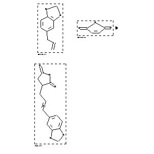

|  |
| FA | RX(1); FLST(1); RX(1) |
Reaction (1 of 1)
| Reaction ID | 35585 |
| Reactant BRN | 136380; 106909 |
| Reactant | 5-allyl-benzo[1,3]dioxole; maleic acid anhydride |
| Product BRN | 276953 |
| Product | (3-benzo[1,3]dioxol-5-yl-allyl)-succinic acid-anhydride |
| No. of Reaction Details | 1 |
Reaction Details (1 of 1)
| Reaction Classification | Preparation |
| Temperature | 140 |
| Comment | Handbook |
| Citation Pointer | 535939; Journal; Lora Tamayo; Larraz; ASEFAR; An.R.Soc.Esp.Fis.Quim.; <B> 44; 1948; 223, 228; |
Reference (1 of 1)
| Citation Number | 535939 |
| Document Type | Journal |
| Authors | Lora Tamayo; Larraz |
| CODEN | ASEFAR |
| Journal Title | An.R.Soc.Esp.Fis.Quim. |
| (Series) Volume | <B> 44 |
| Publication Year | 1948 |
| Page | 223, 228 |